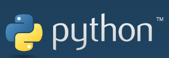

COMP712: Classical Artificial Intelligence
Workshop: Python
Dr Daniel Zhang @ Falmouth University
2023-2024 Study Block 1

Table of Contents
- COMP712: Classical Artificial Intelligence
- Workshop: Python
- Further Reading
- You Task
Python Basics
In addition to our regular teaching sessions, we will be providing workshop materials utilising the Python programming language. These resources will complement the work you do in COMP712.
Python is a lightweight, high-level, open-source, cross-platform, strongly-typed, and interpreted programming language.
- Light-weight: Python code typically has a small footprint. Basically, they are pure text.
- High-level: It is more user-friendly and human-readable than low-level languages like C.
- Open-source: Python source code is freely available.
- Cross-platform: It is independent of the computer’s hardware architecture. The same code works on Windows, Linux/Unix, and Mac.
- Strongly-typed: Although variables don’t have types, like you might be familiar with in other languages, values do.
- Interpreted: Python does not require compilation; it is interpreted at runtime.
In this session, I won’t delve extensively into Python basics. As master’s students, you should be able to grasp the fundamentals quickly. For detailed Python materials, please refer to the resources listed at the bottom of this guide, which are well-written and comprehensive.
Installation
Python should already be installed on university machines. If you are using your own device, you can download the installation file from the official Python website.
-
Note: To ensure a successful installation, open a
Command Windowand typepython. You should receive a response similar to:C:\>python Python 3.10.11 (tags/v3.10.11:7d4cc5a, Apr 5 2023, 00:38:17) [MSC v.1929 64 bit (AMD64)] on win32 Type "help", "copyright", "credits" or "license" for more information. >>>
Certainly! Here’s a simple introduction to Python datatypes in Markdown format with code examples:
Data Types
In Python, data types are used to categorise and manage different types of data. Python offers several built-in data types that help you work with various kinds of information. Here are some of the most commonly used data types in Python:
Numeric Data Types
Integers
Integers (int) represent whole numbers. They can be positive or negative. Numerical operations such as +, -, *, /, and % are supported for calculations.
Example:
>>> x = 5
>>> y = -10
>>> x+y
-5
>>> x*y
-50
>>>
Floating-Point Numbers
Floating-point numbers (float) represent real numbers with a decimal point.
Example:
>>> pi = 3.14159
>>> radius = 98.6
>>> pi * radius
309.76077399999997
>>>
Strings
Strings (str) are sequences of characters enclosed in single (' '), double (" "), or triple (''' ''' or """ """) quotes. The content of string can be displayed using print function. The operator + can be used to concatenate multiple strings.
Example:
>>> name = 'John'
>>> message = "Hello, World!"
>>> multi_line = '''The first line
... The second line'''
>>> print(multi_line)
The first line
The second line
>>> print(name + ', ' + message)
John, Hello, World!
>>>
Sequence
Lists
Lists (list) are ordered collections of items. They can contain elements of different data types. You can use the 0-based index to access certain item in the list.
Example:
>>> fruits = ['apple', 'banana', 'cherry']
>>> numbers = [1, 2, 3, 4, 5]
>>> numbers[0]
1
>>> fruits[2]
'cherry'
>>> fruits[0] = 'grape'
>>> fruits
['grape', 'banana', 'cherry', 'pear']
>>>
Two list can be combined together using operator +, which is a shorthand of the normal extend() function (note: extend() doesn’t return a new list, the change happens in-place). Individual items can be added to list using append() function.
>>> fruits = ['apple', 'banana', 'cherry']
>>> numbers = [1, 2, 3, 4, 5]
>>> print(fruits + numbers)
['apple', 'banana', 'cherry', 1, 2, 3, 4, 5]
>>> numbers.extend(fruits)
>>> print(numbers)
[1, 2, 3, 4, 5, 'apple', 'banana', 'cherry']
>>> fruits.append('pear')
>>> print(fruits)
['apple', 'banana', 'cherry', 'pear']
>>>
Tuples
Tuples (tuple) are ordered collections like lists but are immutable (cannot be changed after creation). The item can be accessed in the same way as list. Notice the immutable property while trying to make change to the tuple.
Example:
>>> coordinates = (2, 4)
>>> colors = ('red', 'green', 'blue')
>>> colors[0]
'red'
>>> coordinates[1]
4
>>> colors[0] = 'yellow'
Traceback (most recent call last):
File "<stdin>", line 1, in <module>
TypeError: 'tuple' object does not support item assignment
>>>
Dictionaries
Dictionaries (dict) are collections of key-value pairs used to store data in an associative manner.
Example:
>>> person = {'name': 'Alice', 'age': 30, 'city': 'New York'}
>>> person['name']
'Alice'
>>> person['age']
30
>>>
Booleans
Booleans (bool) represent two values, True and False, used for logical operations. The logical operations and and or are supported between variables.
Example:
>>> is_sunny = True
>>> is_raining = False
>>> is_sunny and is_raining
False
>>> is_sunny or is_raining
True
>>>
Flow Control
In Python, flow control statements allow you to control the execution of your code. You can make decisions, create loops, and handle exceptions using these constructs. Here are some essential flow control statements:
Conditional Statements
if, elif, and else
Conditional statements allow you to execute different code blocks based on specified conditions.
>>> age = 18
>>> if age < 18:
... print("You are a minor.")
... elif age == 18:
... print("You just became an adult.")
... else:
... print("You are an adult.")
...
You just became an adult.
>>>
Loops
for Loop
A for loop iterates over a sequence (e.g., a list or range) and executes a block of code for each item.
fruits = ["apple", "banana", "cherry"]
for fruit in fruits:
print(fruit)
while Loop
A while loop repeats a block of code as long as a condition is True.
>>> count = 0
>>> while count < 5:
... print("Count:", count)
... count += 1
...
Count: 0
Count: 1
Count: 2
Count: 3
Count: 4
>>>
Control Statements
break
The break statement is used to exit the current loop prematurely.
>>> for number in range(10):
... if number == 5:
... break
... print(number)
...
0
1
2
3
4
>>>
continue
The continue statement skips the rest of the current iteration and proceeds to the next one.
>>> for number in range(5):
... if number == 2:
... continue
... print(number)
...
0
1
3
4
>>>
Exception Handling
try, except, else, and finally
Exception handling helps you manage errors in your code.
>>> try:
... result = 10 / 0
... except ZeroDivisionError:
... result = "Error: Division by zero"
... else:
... result = "Result: " + str(result)
... finally:
... print(result)
...
Error: Division by zero
>>>
By using flow control statements in Python, you can create dynamic and flexible programs that can make decisions, repeat tasks, and handle errors gracefully.
Functions
Functions in Python are reusable blocks of code that perform specific tasks. They are essential for structuring and organising your code.
Defining a Function
To define a function, use the def keyword followed by the function name and any parameters it should accept. The function’s code block is indented.
>>> def greet(name):
... return f"Hello, {name}!"
...
>>>
Calling a Function
To use a function, call it by its name and provide any required arguments.
>>> greet("Alice")
'Hello, Alice!'
>>>
Parameters and Return Values
Functions can accept parameters (inputs) and return values (outputs).
>>> def add(a, b):
... return a + b
...
>>> result = add(3, 5)
>>> print(result)
8
>>>
Default Parameters
You can set default values for function parameters.
>>> def greet(name, greeting="Hello"):
... return f"{greeting}, {name}!"
...
>>> message = greet("Bob")
>>> print(message)
Hello, Bob!
>>>
Variable Scope
Variables defined within a function have local scope, while those defined outside have global scope.
>>> x = 10
>>>
>>> def multiply(y):
... x = 2
... return x * y
...
>>> result = multiply(5)
>>> print(result)
10
>>>
Docstring
Use docstring to provide documentation for your functions. It should be the next line after your function definitions with content wrapped in triple quotation marks, either single (''') or double ("""). The docstring can be viewed by calling help() function.
>>> def square(x):
... """
... This function returns the square of a number.
... """
... return x ** 2
...
>>> help(square)
Help on function square in module __main__:
square(x)
This function returns the square of a number.
>>>
Lambda Functions* {#lambda-functions }
Lambda functions are small, anonymous functions defined using the lambda keyword.
>>> multiply = lambda x, y: x * y
>>> result = multiply(3, 4)
>>> print(result)
12
>>>
Function Recursion
Functions can call themselves. Recursive functions are used for tasks that can be divided into smaller, similar tasks.
>>> def factorial(n):
... if n == 0:
... return 1
... else:
... return n * factorial(n - 1)
...
>>> factorial(5)
120
>>>
Classes
In Python, a class is a blueprint for creating objects. It defines the structure and behaviours of objects of that class while facilitating object-oriented programming, which is a powerful paradigm for building complex systems.
Defining a Class
To define a class, use the class keyword followed by the class name, and a colon. The class’s attributes and methods are defined within the class block.
class Dog:
# Class attributes
species = "Canis familiaris"
# Constructor method
def __init__(self, name, age):
self.name = name
self.age = age
# Instance method
def description(self):
return f"{self.name} is {self.age} years old."
# Another instance method
def speak(self, sound):
return f"{self.name} says {sound}."
Creating Objects
To create an object (an instance) of a class, call the class as if it were a function with any required arguments.
mikey = Dog("Mikey", 6)
Accessing Attributes and Methods
You can access attributes and methods of an object using the dot (.) notation.
>>> print(mikey.description())
Mikey is 6 years old.
>>> print(mikey.speak("Woof Woof"))
Mikey says Woof Woof.
>>>
Inheritance
Inheritance allows you to create a new class based on an existing class. The new class inherits attributes and methods from the parent class.
>>> class Beagle(Dog):
... def run(self, speed):
... return f"{self.name} runs at {speed}."
...
>>> buddy = Beagle("Buddy", 3)
>>> print(buddy.run("fast"))
Buddy runs at fast.
>>>
Encapsulation
Python supports encapsulation, which means you can restrict access to certain attributes and methods using the underscores _ convention. Such attributes and methods are protected and can only be accessed by the class itself.
class Circle:
def __init__(self, radius):
# Protected attribute
self._radius = radius
def _calculate_area(self):
# Protected method
return 3.14159 * self._radius * self._radius
Polymorphism
Polymorphism allows objects of different classes to be treated as objects of a common superclass. This is useful for creating flexible and dynamic code.
>>> class Animal:
... ''' Animial base class '''
... def __init__(self,name,age):
... self._name = name
... self._age = age
...
... def speak(self):
... return ('Animal speaks!')
...
>>> class Dog(Animal):
... ''' Dog sub-class '''
... def __init__(self,name,age):
... super().__init__(name,age)
...
... def speak(self):
... print(f'{self._name} says: Woof woof!')
...
>>> class Cat(Animal):
... ''' Cat sub-class '''
... def __init__(self,name,age):
... super().__init__(name,age)
...
... def speak(self):
... print(f'{self._name} says: Meow meow!')
...
>>> my_dog = Dog("Buddy", 5)
>>> my_cat = Cat("Whiskers", 3)
>>> my_dog.speak()
Buddy says: Woof woof!
>>> my_cat.speak()
Whiskers says: Meow meow!
>>>
File Operations
File operations in Python allow you to interact with files on your computer. You can read, write, and manipulate data in files. Here’s how to work with files:
Opening a File
You can open a file using the open() function. Provide the file’s path and specify the mode (‘r’ for reading, ‘w’ for writing, ‘a’ for appending, ‘b’ for binary mode, etc.).
# Opening a file for reading
file = open("example.txt", "r")
Reading from a File
To read the content of a file, you can use various methods like read(), readline(), or readlines().
# Read the entire file
content = file.read()
# Read a single line
line = file.readline()
# Read all lines into a list
lines = file.readlines()
Writing to a File
To write to a file, open it in write ('w') or append ('a') mode and use the write() method.
# Open a file for writing
file = open("output.txt", "w")
# Write a line to the file
file.write("Hello, World!\n")
Closing a File
Always close a file after you’re done with it using the close() method to free up system resources.
file.close()
Using ‘with’ Statement
A better practice is to use the ‘with’ statement, which ensures the file is properly closed even if an error occurs.
with open("example.txt", "r") as file:
content = file.read()
Reading and Writing Binary Files
You can read and write binary files by specifying the ‘b’ mode.
with open("binary_data.bin", "rb") as binary_file:
data = binary_file.read()
with open("new_binary_data.bin", "wb") as new_binary_file:
new_binary_file.write(data)
Handling Exceptions
When working with files, it’s important to handle exceptions, especially if the file may not exist.
try:
with open("file.txt", "r") as file:
content = file.read()
except FileNotFoundError:
print("The file does not exist.")
Python’s file operations make it easy to work with text and binary files, which is essential for tasks such as data reading, writing, and processing. Always remember to close files properly to avoid resource leaks.
Package Management
Python package management involves installing, managing, and using external libraries or packages in your Python projects. The most common tool for package management in Python is pip. Here are some key operations:
Installing Packages
You can install packages from the Python Package Index (PyPI) using pip. Simply provide the package name as an argument.
pip install package_name
Example:
The following command will install the popular numpy package.
pip install numpy
Listing Installed Packages
You can list all the packages installed in your Python environment using pip list.
pip list
Creating a requirements.txt File
A requirements.txt file lists all the packages your project depends on, making it easy to recreate your project’s environment on another system.
Create the file:
pip freeze > requirements.txt
Example requirements.txt:
requests==2.26.0
flask==2.1.1
numpy==1.21.0
Note: the version number is optional. You don’t need to define the version numbers unless your implementation only works with a specific version of 3rd party libraries.
Installing Packages from a requirements.txt File
To install packages listed in a requirements.txt file, use the -r flag.
pip install -r requirements.txt
This installs all the packages listed in the file.
Python package management is crucial for utilizing external libraries and packages to enhance the functionality of your Python projects. Using pip and requirements.txt files simplifies the process of package installation and project environment management.
Further Reading
You Task
Task 1: Prime Number Calculation
- Write a function to calculate prime numbers between 2 and
N, whereNis the input parameter.
Task 2: Guess My Number Game
- Write a script to implement the
Guess My Numbergame:- Randomly generate a number within a specified range
[a, b]. - Prompt the user to input a guess and keep track of the number of attempts.
- Provide feedback if the guess is either “too large” or “too small.”
- When the user correctly guesses the number, display the total number of attempts.
- Write the highest score to a file on the dist (the minimal number of guesses).
- Randomly generate a number within a specified range
Task 3: Guess The Number Game (Advanced)
- Write a script to implement a more complex version of the
Guess The Numbergame:- Generate a random 4-digit number where each digit is unique and ranges from 0 to 9.
- Allow the user a set number of attempts (e.g., 10 to begin with).
- Provide feedback to the user regarding how many digits were guessed correctly and are in the correct positions, as well as how many digits were guessed correctly but are in different positions (correct digits, incorrect positions).
- Continue the game until the specified number of attempts is exhausted and determine the win/loss status.
- Write game status to a file in case the user exit before the guess runs out. This will make the game restartable if the states file presents in the folder.
Submit Your Code
You can submit a pull request to the original repository to showcase your work if you like.
The Repository
Fork the repository (do not clone!) and work on your fork. This will enable you to submit a pull request at the end.
https://github.falmouth.ac.uk/Daniel-Zhang/COMP712-Python.git